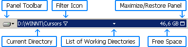

Directory Line
The Directory Line is a horizontal bar at the top of a panel. It can display the following components:

Panel Toolbar
The Panel toolbar contains the most commonly used menu commands for the panel. You can right-click the Change Drive button to display the context menu for the current directory.
Current Directory
The Current Directory text identifies the directory being viewed in the panel. Click part of the path to change the current directory. Right-click the path to assign a Hot Path or copy it to the clipboard. You can drag the path to the Command Line or to the other Directory Line. You can also drop something onto the Directory Line to change the directory in the panel. This can be either text that contains a path (for example, from a text editor) or an actual directory dragged from Windows Explorer.
Filter Icon
This icon ( ) is
displayed whenever some files or directories in the current directory
are not shown in the panel. This can be caused by any combination of the following:
you are using a filter, you have hidden some selected files or directories
(see Limiting the Files and Directories to Display),
or you do not want to see hidden and system files (see
Hide files and directories with hidden or system attribute in
Configuration/Panels). Click this icon to open the
context menu, from which you can remove these conditions and display all
existing files and directories.
) is
displayed whenever some files or directories in the current directory
are not shown in the panel. This can be caused by any combination of the following:
you are using a filter, you have hidden some selected files or directories
(see Limiting the Files and Directories to Display),
or you do not want to see hidden and system files (see
Hide files and directories with hidden or system attribute in
Configuration/Panels). Click this icon to open the
context menu, from which you can remove these conditions and display all
existing files and directories.
List of Working Directories
Appears as an arrow between Current Directory and Free Space. Click the arrow to open the List of Working Directories.
Free Space
Displays the amount of free space on the current disk. When clicked, the Drive Information dialog opens.
Maximize/Restore Panel
A panel can be maximized (the other panel is minimized at the same time) to provide more space for viewing files and directories. See Maximizing and Restoring a Panel for details. This button is optional; see Show maximize/restore button in Directory line in Configuration/Appearance.